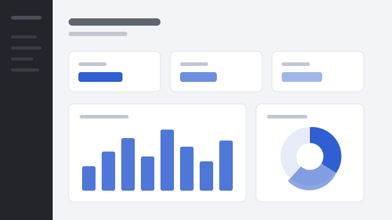
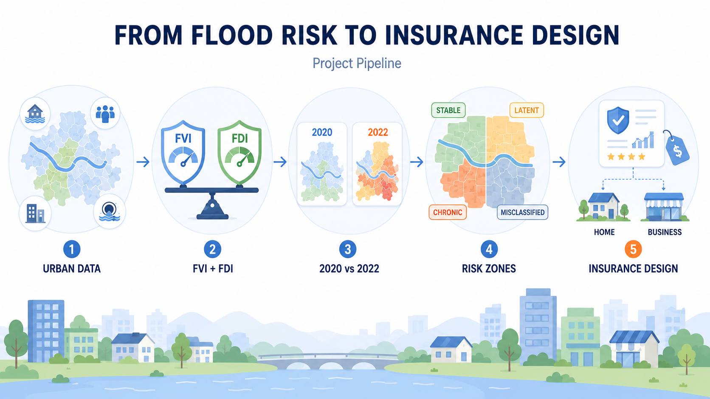

Data Analyst · Researcher
Seunghyeon Lee.
현실의 문제를 분석 가능한 질문으로.
Customer Behavior · E-commerce · AI Agent · ML/DL · Spatial Analysis
PROFILE PHOTO

현실의 문제를 분석 가능한 질문으로.
Customer Behavior · E-commerce · AI Agent · ML/DL · Spatial Analysis
저는 데이터를 분석하는 것보다, 분석 결과가 실제로 어디에 쓰이는지를 고민하는 과정에 더 흥미를 느낍니다. 축제의 교통 혼잡을 줄일 셔틀 정류장을 찾고, 기후변화에 따른 홍수 위험을 다시 평가해 보험요율로 연결하고, 코드화된 의료 데이터를 사용자가 읽을 수 있는 대시보드로 바꿔 왔습니다.
다룬 문제는 달랐지만 과정은 같았습니다. 현실의 문제를 분석 가능한 질문으로 바꾸고, 데이터에서 패턴을 찾고, 그 결과를 다시 정책·서비스·비즈니스 의사결정으로 되돌려 놓는 일입니다.
분석·모델링부터 시각화, 공간 분석, 최적화까지 문제에 맞는 도구를 골라 씁니다.
분석은 마무리되었고 현재 논문을 집필 중인 연구입니다. 상세 방법론과 결과는 아직 공개하지 않습니다.
분석에서 멈추지 않고 정책·운영·서비스 설계까지 이어간 프로젝트들입니다. 카드를 눌러 전체 과정을 확인할 수 있습니다.


데이터 분석, 리스크 관리, 창업 아이디어 부문에서 받은 전국 단위 수상 내역입니다.
데이터 분석 직무, 고객 행동 · E-commerce · AI 연구 협업에 관심이 있습니다.
기후변화로 과거에는 피해가 크지 않던 지역에서도 예측하기 어려운 극한 강우와 침수가 발생하고 있습니다. 기존의 정적인 홍수 위험 평가만으로는 실제 지역 위험을 설명하기 어렵다는 문제에서 출발했습니다.
서울특별시를 대상으로 평상시와 집중호우 상황의 위험 변화를 비교하고, 지역의 취약성과 재난 대응 역량을 함께 반영하는 평가 체계를 설계했습니다. 목표는 단순한 위험 순위가 아니라 지역별 보험요율과 보상 구조 설계까지 연결하는 것이었습니다.
공공데이터와 위성데이터에서 실제 홍수 피해와 관련된 변수를 추출해, 지역 위험을 두 축으로 재구성했습니다.
피해 규모, 인구·가구 밀도, 불투수면 비율로 지역의 홍수 취약성을 평가합니다.
방재시설, 하수관로, 재정자립도, 소방인력으로 지역의 대응 역량을 측정합니다.

기존 PCD Matrix는 방재 역량과 관측 피해만으로 자치구를 Dangerous · Mess · Safe · Well-Protected 네 범주로 분류합니다. 2020년과 2022년 결과를 비교한 결과 분류와 실제 피해 사이에 괴리가 나타났고, 이것이 더 포괄적인 리스크 프레임이 필요한 근거가 되었습니다.
평상시와 극한강우 상황의 위험 변화를 비교해 지역을 4가지 리스크 유형으로 분류했습니다. 특히 기존의 정적 평가로는 포착하기 어려웠던 잠재위험 지역(Latent-Risk)을 식별했습니다.
FVI 분석 결과를 실제 보험료 산정에 쓸 수 있도록 자치구별 Risk Coefficient로 변환했습니다. 위험도가 높은 지역일수록 더 높은 계수가 반영되는 구조입니다.
리스크 유형별로 서로 다른 보상 구조를 설계했습니다.
| Risk Type | Compensation Structure |
|---|---|
| Stable | 실손 기반 선형 보상 |
| Latent-Risk | 다중 강우 트리거 기반 단계적 지급 |
| Chronic-Risk | 단계적 지급 + 비례 상한 결합 구조 |
| Misclassified | 선지급 후 실손 정산 |
자산과 가입자 특성에 따라 주택용·상업용 상품군을 세분화했습니다.
| Type | 건물 보장 | 가재도구 | 자기부담금 | 대상 |
|---|---|---|---|---|
| Basic | 2억 | 5천만 | 100만 | 단독·노후 도심 주택 |
| Premium | 3억 | 1억 | 50만 | 고가 주택 · 저위험 자치구 |
| Affordable | 1.5억 | 3천만 | 200만 | 침수 취약 · 가격민감 가구 |
지역 축제 기간에는 차량과 방문객이 짧은 시간에 몰리며 교통 혼잡과 주차 문제가 발생합니다. 이를 완화하기 위해 셔틀버스 정류장 위치·운행 노선·배차 간격을 데이터 기반으로 최적화했습니다.
축제 기간의 유동인구와 교통 패턴을 분석해 관람객의 이동 편의와 축제 운영 효율을 높이고, 궁극적으로 축제 만족도와 지역 활성화에 기여하는 것이 목표였습니다.
제한된 정류장 수 안에서 수요 커버리지와 이용자 접근성을 함께 만족시키기 위해 두 모델을 병행했습니다.
AHP 기반 수요 가중치를 반영해, 400m 서비스 반경 안에서 가중 수요 커버리지를 최대화하는 정류장을 선택합니다.
각 수요 지점을 가장 가까운 정류장에 배정하고, 수요 가중 총 이동거리를 최소화합니다.

MCLP와 P-Median 결과를 통합해 약 43개의 후보군을 구성한 뒤 Greedy Algorithm을 적용했습니다. AHP 기반 종합 중요도가 높은 후보부터 검토하면서, 이미 선택된 정류장과 400m 이상 간격을 유지하도록 중복 후보를 제거해 최종 22개를 선정했습니다.
선정된 22개 정류장의 공간 분포를 기준으로 K-Means와 Hierarchical Clustering을 비교했습니다. Silhouette Score를 기준으로 최적 군집 수를 K=2로 결정하고, 각 11개 정류장으로 구성된 2개의 셔틀 운행 권역과 노선을 설계했습니다.
국민건강보험공단의 건강검진정보, 진료내역정보, 의약품 처방정보를 활용해 개인의 건강 상태를 종합적으로 분석하고 시각화한 프로젝트입니다. 여러 의료 데이터를 종합해 개인별 건강위험수치와 질병·의약품 분포를 한눈에 확인할 수 있는 Power BI 대시보드로 구현하고, 이를 바탕으로 개인 맞춤형 건강관리 서비스 Easy Care를 기획했습니다.
건강검진 종합 현황, 개인별 건강위험 분석, 주상병 분포, 의약품 처방 분포를 확인할 수 있는 대시보드를 제작했습니다. 사용자는 기준연도와 지역을 선택해 연령별 신장·체중, BMI, 흡연·음주 여부, 혈압, 당뇨, 빈혈, 신장 및 간 기능 상태를 비교할 수 있고, 가입자별 건강위험수치와 세부 건강 상태도 확인할 수 있습니다.
의료 데이터는 수치를 그대로 보여주는 것보다 사용자가 이해할 수 있는 상태와 언어로 변환하는 과정이 중요했습니다. 질병 코드와 의약품 코드를 실제 질병명·약물명·주요 기능으로 변환해 해석 가능성을 높였고, 흩어진 건강검진 항목을 하나의 탐색 지표로 통합해 개인의 건강 상태를 직관적으로 비교할 수 있게 했습니다.